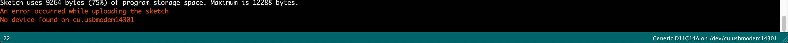

This week we learned about how to connect multiple boards together, utilizing both radio signalling as well as wired connections. The usefulness of IoT is in the fact that you are able to transmit data from multiple boards, and process the informnation to get other boards to do something else. I have tried uploading and reuploading Arduino, the boards, etc but am still having trouble in simply uploading. I believe there is something wrong with my microUSB cord since the error says "there is no device found on cu.usbmodem14301". Update: I have now tried multiple microUSBs and none of them work. I am lost. I have managed to upload into the ItsyBitsy, so it doesnt make sense why I can upload to one board and not the other...
